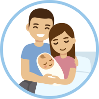
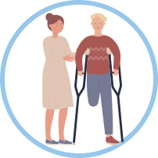
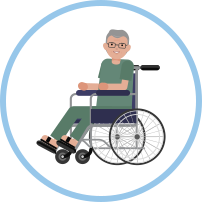

1. Planes de beneficios de acuerdo con tipos de afiliación.
1.1 Plan Obligatorio de Salud. (POS)
El Ministerio de Salud afirma que el eje del Sistema General de Seguridad Social en Salud -SGSSS en Colombia es el Plan Obligatorio de Salud -POS, que corresponde al paquete de servicios básicos en las áreas de recuperación de la salud, prevención de la enfermedad y cubrimiento de ingresos de manera transitoria -prestaciones económicas- cuando se presenta incapacidad de trabajar por enfermedad, accidentes o por maternidad. Hoy en día es llamado Plan de Beneficios en Salud.
El Plan de Beneficios en Salud (PBS)
Es el conjunto de servicios y tecnologías en salud a que tiene derecho todo afiliado al Sistema General de Seguridad Social en Salud (SGSSS) y cuya prestación debe ser garantizada por las Entidades Promotoras de Salud (EPS) entendiéndose por tecnologías en salud todas las actividades, procedimientos, intervenciones, medicamentos, insumos, servicios, materiales, equipos, dispositivos y paliación de la enfermedad. (Salud Total , s.f.)
Aquí encontrará una línea de tiempo con la evolución del plan de beneficios.
Resolución 3512 de 2019 y sus anexos Circular 017 de 2019.
2019
Resolución 5857 de 2018 y sus anexos por la cual se actualiza integralmente el Plan de Beneficios en Salud con cargo a la Unidad de Pago por Capitación (UPC).
Resolución 046 de 2018 Por medio de la cual se corrigen unos errores de carácter formal en la Resolución 5269 de 2017 "Por la cual se actualiza integralmente el Plan de Beneficios en Salud con Cargo a la Unidad de Pago por Capitación (UPC)".
2018
Resolución 5269 de 2017 y sus anexos Por la cual autoriza integralmente el Plan de Beneficios en Salud con Cargo a la Unidad de Pago por Capitación (UPC).
2017
Resolución 6408 de 2016 y sus anexos Resolución 0001 de 2016. Por la cual se modifica el Plan de Beneficios en Salud con cargo a la Unidad de Pago por Capitación (UPC).
2016
Resolución 5592 de 2015 y sus anexos. Por la cual se actualiza integralmente el Plan de Beneficios en Salud con cargo a la Unidad de Pago por Capitación-UPC del Sistema General de Seguridad Social en Salud —SGSSS y se dictan otras disposiciones.
2015
Resolución 5926 de 2014. “Por la cual se ajusta el anexo 1 de la Resolución 5521 de 2013”.
2014
Resolución 5521 de 2013 y sus anexos “Por la cual se define, aclara y actualiza integralmente el Plan Obligatorio de Salud (POS)”.
2013
POS Pópuli
Es una herramienta que permite realizar consultas acerca de los contenidos del Plan de Beneficios en Salud de una manera ágil, sencilla y divertida en un lenguaje de fácil comprensión.
En los siguientes enlaces se encuentran unos videos que le darán a conocer todo lo que debe saber sobre los contenidos del plan de beneficios a los que tienen derecho todos los colombianos.
Así funciona POSPópuli, la nueva App de Minsalud. | Félix Régulo Nates, Director de Regulación Beneficios, Costos y Tarifas del Aseguramiento en Salud de Minsalud, explica el funcionamiento de la App POSPópuli.
POSPOPULI
Enlace a la página del Ministerio de Salud acerca del plan de beneficios.
Todo lo que usted debe saber sobre el plan de beneficios – POS.
Principales beneficios del decreto de afiliación.
1.2 Plan de Atención Complementaria
El artículo 18 del Decreto 806 de 1998 define los Planes de Atención Complementaria, PAC como aquellos beneficios que comprenden actividades, intervenciones y procedimientos no indispensables ni necesarios para el tratamiento de la enfermedad y el mantenimiento o la recuperación de la salud o condiciones de atención. Es un plan de contratación individual, familiar o colectivo, que brinda servicios de fácil acceso, con una red preferencial de IPS, mayor cobertura, comodidad y tecnología, ampliando los beneficios del Plan de Beneficios en Salud (PBS), la medicina prepagada es mucho más amplia que un plan complementario en salud.
Como se mencionó anteriormente, el plan complementario es una extensión de la EPS, en cambio, la medicina prepagada es un servicio completamente independiente y se caracteriza por su amplitud en coberturas. (Ministerio de Salud , s.f.)
Las coberturas específicas para cada persona dependen del plan que escoja de entre las opciones que le ofrezca la EPS que se adapte a sus necesidades y a su economía. Recordemos que la afiliación a este tipo de planes es voluntaria y la adquiere el afiliado con sus propios recursos.
No todas las EPS ofrecen estos planes. En la actualidad 7 EPS de 11 EPS del régimen contributivo ofrecen estos planes (Compensar, Famisanar, Nueva EPS, Sanitas, Sura, Coomeva, SOS). Entre todos hoy tienen cerca de 300.000 afiliados.
Vale la pena aclarar que los planes complementarios son solo un tipo de plan voluntario de salud de entre otros que ofrece el mercado a los afiliados que deseen adquirir coberturas adicionales a las que brinda el Sistema General de Seguridad Social en Salud.
En efecto en el país la legislación permite la comercialización de diferentes tipos de planes de salud voluntarios que son financiados con recursos propios, adicionales a los denominados planes complementarios que ofrecen las EPS, como son:
-
Planes de medicina prepagada, ofrecidos por Entidades de Medicina Prepagada – EMP.
-
Planes de ambulancias prepagadas, ofrecidos por Servicios de Ambulancia Prepagada – SAP.
-
Pólizas de salud, ofrecidas por compañías de seguros generales. (Paredes, 2018)
Enlace de la normatividad.
En el siguiente video puede identificar las diferencias entre Plan de Beneficios en Salud y Planes Voluntarios de Salud.
Diferencias entre Plan de Beneficios en Salud y Planes Voluntarios de Salud | Sabe ¿cuál es la diferencia entre Planes de Beneficios en Salud y Planes Voluntarios de Salud ? #DescubraPalabras con la Supersalud
1.3 Plan Decenal de Salud Pública
PDSP, 2012-2021, es producto del Plan Nacional de Desarrollo 2010-2014, y busca la reducción de la inequidad en salud, planteando los siguientes objetivos:
-
Avanzar hacia la garantía del goce efectivo del derecho a la salud.
-
Mejorar las condiciones de vida que modifican la situación de salud y disminuyen la carga de enfermedad existente.
-
Mantener cero tolerancias frente a la mortalidad, la morbilidad y la discapacidad evitable. Uno de los mayores desafíos del Plan Decenal de Salud Pública PDSP, 2012-2021, es afianzar el concepto de salud como el resultado de la interacción armónica de las condiciones biológicas, mentales, sociales y culturales del individuo, así como con su entorno y con la sociedad, a fin de poder acceder a un mejor nivel de bienestar como condición esencial para la vida (Ministerio de Salud , s.f.)
El Plan Decenal de Salud Pública se desarrolla a través de 8 dimensiones prioritarias y 2 transversales
Prioritarias
-
Salud ambiental.
-
Convivencia social y salud mental.
-
Seguridad alimentaria y nutricional.
-
Sexualidad y derechos sexuales y reproductivos.
-
Vida saludable y enfermedades trasmisibles.
-
Salud publica en emergencias y desastres.
-
Vida saludable y condiciones transmisibles.
-
Salud y ámbito laboral.
Transversales
-
Dimensión gestión diferencial de las poblaciones vulnerables.
-
Fortalecimiento de la autoridad sanitaria para la gestión de salud.
En el siguiente enlace se encuentra un video donde se describen las dimensiones del Plan Decenal de Salud Pública 2012 – 2021.
Dimensiones del Plan Decenal de Salud Pública 2012 - 2021 | El Plan Decenal de Salud Pública 2012 - 2021 de Colombia, plantea ocho dimensiones prioritarias y dos dimensiones transversales. Estas dimensiones hacen referencia a aspectos de bienestar, desarrollo humano y calidad de vida.
1.4 Seguro Obligatorio de Accidentes de Tránsito – SOAT

Decreto 967 de 2012 “Define la cobertura del seguro obligatorio de daños corporales causados a las personas en accidentes de tránsito - SOAT, por concepto de gastos médicos, quirúrgicos, farmacéuticos y hospitalarios por lesiones en un valor máximo de 800 salarios mínimos legales diarios vigentes (SMLDV) al momento de la ocurrencia del accidente de tránsito”.
-
El SOAT es una póliza que protege en caso de daños físicos ocasionados a peatones, pasajeros o conductores. Este seguro ampara gastos médicos y de transporte, incapacidad permanente e indemnizaciones por muerte y servicios funerarios.
-
Tiene una vigencia de 1 año y debe ser tramitado por el propietario de carro.
-
Todas las instituciones prestadoras de salud del país están obligados a brindar atención a las víctimas de accidentes de tránsito.
Accidente de tránsito acuerdo
Según el Decreto 3990 de 2007, es un “suceso ocasionado o en el que haya intervenido al menos un vehículo automotor en movimiento, en una vía pública o privada con acceso al público, destinada al tránsito de vehículos, personas y/o animales, y que, como consecuencia de su circulación o tránsito, cause daño en la integridad física de las personas”.
1.5 Eventos Catastróficos y Accidentes de Tránsito - ECAT
Fondo de Solidaridad y Garantía FOSYGA Subcuenta de Seguro de Riesgos Catastróficos y Accidentes de Tránsito ECAT.
Decreto 3990 DE 2007 (octubre 17) por el cual se reglamenta la Subcuenta del Seguro de Riesgos Catastróficos y Accidentes del Tránsito del Fondo de Solidaridad y Garantía, Fosyga, se establecen las condiciones de operación del aseguramiento de los riesgos derivados de daños corporales causados a las personas en accidentes de tránsito, eventos catastróficos y terroristas, las condiciones generales del seguro de daños corporales causados a las personas en accidentes de tránsito, Soat, y se dictan otras disposiciones.
2007
Decreto Único Reglamentario 1084 de 2015 Nivel Nacional. El Ministerio de Salud y Protección Social, a través de la subcuenta de eventos catastróficos y accidentes de tránsito ECAT del Fondo de Solidaridad y Garantía Fosyga, cubrirá el reconocimiento y pago de los servicios de asistencia médica, quirúrgica y hospitalaria en los términos del parágrafo del artículo 54 de la Ley 1448 de 2011, que no estén cubiertos por los planes de beneficios del sistema general de seguridad social en salud, ni por regímenes especiales o cualquier tipo de seguro en salud de que sea titular o beneficiaria la víctima. (Artículo 2.2.6.1.3)
2015
Decreto 1500 de 2016 Nivel Nacional. Modifica el artículo 2.6.1.4.3.10 de la sección 3 del capítulo 4 del título 1 de la parte 6 del libro 2 del Decreto 780 de 2016, Único Reglamentario del Sector Salud y Protección Social, en relación con la verificación de requisitos para el reconocimiento de los gastos e indemnizaciones cubiertos por la subcuenta ECAT del FOSYGA y relaciona los documentos que deberán acreditarse por parte de los reclamantes de prestaciones por eventos catastróficos y accidentes de tránsito, y que serán objeto de verificación por parte de las compañías de seguros autorizadas para operar el Seguro Obligatorio de Accidentes de Tránsito SOAT.
2016
Decreto Único Reglamentario 780 de 2016 Nivel Nacional. Se establecen las condiciones de cobertura, ejecución de recursos, funcionamiento y aspectos complementarios para el reconocimiento y pago de los servicios de salud, indemnizaciones y gastos derivados de accidentes de tránsito, eventos catastróficos de origen natural, eventos terroristas y demás eventos aprobados por el Ministerio de Salud y Protección Social en su calidad de Consejo de Administración del Fosyga, en que deben operar tanto la Subcuenta ECAT del Fosyga, como las entidades aseguradoras autorizadas para expedir el SOAT y demás entidades referidas en el ámbito de aplicación de este acto administrativo. (Artículos 2.6.1.4.1. al 2.6.1.4.4.4.)
La financiación de FOSYGA hoy día llamado ADRES se lleva a cabo de acuerdo con cada subcuenta
Subcuenta de compensación
La subcuenta tiene por objeto permitir el proceso de compensación interna entre las Entidades Promotoras de Salud -EPS- y demás Entidades Obligadas a Compensar –EOC-, con el fin de reconocer la Unidad de Pago por Capitación y demás recursos a que tienen derecho estas entidades para financiar la prestación de servicios de salud a todos los afiliados al régimen contributivo con sujeción a los contenidos del Plan Obligatorio de Salud –POS- y las prestaciones económicas a que hubiere lugar, de acuerdo con lo dispuesto en la ley y sus reglamentos. (Ministerio de Salud y Protección Social, 2016)
Subcuenta de solidaridad
De conformidad con el artículo 221 de la Ley 100 de 1993, esta subcuenta permite cofinanciar con los entes territoriales, los subsidios a los afiliados al régimen subsidiado, siendo estos los colombianos más pobres y vulnerables. (Ministerio de Salud y Protección Social, 2016)
Subcuenta promoción y prevención
El objeto de esta subcuenta es financiar actividades de educación, información y fomento de la salud y de prevención de la enfermedad. (Ministerio de Salud y Protección Social, 2016)
Subcuenta de ECAT
Los Decretos 1283 de 1996 y 3990 de 2007 Decreto 056 de 2015 (artículo 2.6.1.4.1 del capítulo 4 del título I - parte 6 – libro 2 del Decreto 780 de 2016) reglamentaron la Subcuenta ECAT del FOSYGA creada mediante la Ley 100 de 1993 y los procedimientos para el cobro de la atención en salud, gastos médicos y quirúrgicos, indemnización por muerte, gastos funerarios, transporte en accidentes de tránsito, eventos catastróficos naturales y terroristas (Ministerio de Salud y Protección Social, 2016)
2. Liquidación de aportes al SGSSS: Ingreso Base de Cotización
2.1 IBC (Ingreso Base de Cotización)
Es el valor que se toma como base para aplicar el porcentaje de aporte al momento de realizar la cotización al Sistema General de Seguridad Social (SGSSS), de acuerdo con el salario básico y las novedades que presente el trabajador dependiente o independiente en el respectivo mes. (Aportes en línea, 2015)
Salud
De conformidad con lo establecido en el artículo 204 de la Ley 100 de 1993 modificado por el artículo 10 de la Ley 1122 de 2007, la base de cotización de los trabajadores con vinculación contractual, legal y reglamentaria para la afiliación al Sistema General de Seguridad Social en Salud a través del Régimen Contributivo, en ningún caso podrán ser inferior al equivalente al 12.5% de un salario mínimo legal mensual vigente. (SMLMV)
Pensiones
De conformidad con lo establecido en el artículo 17 de la Ley 100 de 1993, modificado por artículo 40 de la Ley 797 de 2003, durante la vigencia de la relación laboral y del contrato de prestación de servicios, deberán efectuarse cotizaciones obligatorias a los regímenes del sistema general de pensiones por parte de los afiliados, los empleadores y contratistas con base en el salario o ingresos por prestación de servicios que aquellos devenguen.
El valor correspondiente a la cotización en el Sistema General de Pensiones, para el presente año es del 16% del ingreso base de cotización.
Riesgos laborales
Ley 1562 de 2012"Por La cual se modifica el sistema de riesgos laborales y se dictan otras disposiciones en materia de salud ocupacional".
Es el conjunto de entidades públicas y privadas, normas y procedimientos, destinados a prevenir, proteger y atender a los trabajadores de los efectos de las enfermedades y los accidentes que puedan ocurrirles con ocasión o como consecuencia del trabajo que desarrollan.
Las disposiciones vigentes de salud ocupacional relacionadas con la prevención de los accidentes de trabajo y enfermedades laborales y el mejoramiento de las condiciones de trabajo hacen parte integrante del Sistema General de Riesgos Laborales.
El aporte será de acuerdo con el nivel de riesgo
Riesgo I 0,522%
Riesgo II 1,044%
Riesgo III 2;436%
Riesgo IV 4,350%
Riesgo V 6,960%
Para el cálculo del ingreso base de cotización (IBC) y cálculo de los aportes a seguridad social y aportes parafiscales se debe tomar el 70% del valor total devengado, es decir, el 70% de los 13 salarios mínimos mensuales vigentes.
Para salario integral:
De conformidad con lo establecido en el artículo 135 de la Ley 1753 de 2015, los trabajadores independientes que perciban ingresos iguales o superiores a un salario mínimo mensual deberán cotizar al sistema sobre un IBC mínimo del 40 % sobre el total de sus ingresos, y están obligados a pagar el total de los porcentajes de pensiones (16 %) y riesgos laborales (según el nivel de riesgo).
2.2 Planilla Integrada de liquidación de aportes – PILA
(Decreto 1670 de 2007 y Decreto 948 de 2018)
La Planilla Integrada de Liquidación de Aportes (PILA) es un formato inteligente que le permite, a todas las personas y empresas, liquidar y pagar sus aportes al Sistema de la Protección Social, es decir, a los subsistemas de salud, pensiones, riesgos profesionales, cajas de compensación, Sena e ICBF.
Decreto 1670 de 2007
Por medio del cual se ajustan las fechas para el pago de aportes al Sistema de la Protección Social y para la obligatoriedad del uso de la Planilla Integrada de Autoliquidación de Aportes.
El Decreto 948 de 2018
El cual entró en vigor a partir del 31 de mayo de 2018, modificó el Decreto 1765 de 2017, en lo referente a los plazos para la utilización obligatoria de la planilla electrónica.
Según el Ministerio de Salud la Planilla Integrada de Liquidación de Aportes PILA “es una ventanilla virtual que permite el pago integrado de aportes al Sistema de Seguridad Social Integral y Parafiscales en la cual los aportantes reportan la información para cada uno de los subsistemas en los que el cotizante está obligado a aportar. Es responsabilidad del aportante suministrar la información para la liquidación de aportes al Sistema de Seguridad Social Integral y Parafiscales”. (Ministerio de Salud , s.f.)
Una vez revisada la normatividad puede ingresar al enlace del Ministerio de Salud donde encontrará el ABC sobre la implementación de la Resolución 3559 de 2018 y el ABC respuestas PILA donde puede encontrar más clara la información.
Señor aprendiz, en el siguiente enlace se encuentra el video ¿Cómo realizar el proceso de pago para PILA?, en él podrá observar el paso a paso del proceso de pago Planilla Integrada de Liquidación de Aportes PILA.
¿Cómo realizar el proceso de pago para PILA? | En este video se explica el paso a paso para hacer el pago de la Planilla Integrada de Liquidación (PILA).
Pago electrónico - pago asistido
Para liquidar por planilla asistida, se debe comunicar siempre a la línea telefónica de la entidad de su elección, en esta línea le ayudarán con todo el proceso de liquidación y reporte de novedades. Los tipos de aportantes que pueden utilizar esta modalidad son empresas independientes con ingreso base de cotización menor a 3 salarios mínimos legales mensuales vigentes, empleador doméstico y aportantes en municipios con categoría 5 y 6.
El único medio de pago de forma presencial en los siguientes puntos bancarios Banco AV Villas, Banco Bogotá, Banco de Occidente, Banco Popular, Puntos Vía, Almacenes Éxito, Carulla, Surtimax, o el pago lo puede efectuar a través de transferencia electrónica por medio del botón de Pago Seguro en Línea (PSE).
Para generar la liquidación y pago por modalidad electrónica, el usuario debe generar un usuario que le permite ingresar al aplicativo para realizar su liquidación o alguna novedad. (Ministerio de Salud, s.f.)
Apreciado aprendiz en el siguiente enlace podrá encontrar una diversidad de video (tutoriales) que le permitirá visualizar diferentes temas relacionados con pagos de aportes en línea de independientes y empleados como: registrarme por primera vez, liquidar un independiente, etc.
Clasificación del aportante
Decreto 1670 de 2007 por medio del cual se ajustan las fechas para el pago de aportes al Sistema de la Protección Social y para la obligatoriedad del uso de la Planilla Integrada de Liquidación de Aportes.
Derogado parcialmente por el Decreto Nacional 728 de 2008 por medio del cual se establecen las fechas de obligatoriedad del uso de la Planilla Integrada de Liquidación de Aportes para pequeños aportantes e independientes.
200 o más cotizantes.
Clase A
200 o menos cotizantes.
Clase B
MyPime Ley 590 de 2000, menos de 200 cotizantes - Descuentos en aportes parafiscales.
Clase C
Beneficiario Ley 1429 de 2010.
Clase D
Independientes
(Aportes en línea, 2017).
Clase I
Tipos de aportante
Definen algunas características de los aportantes y los tipos de cotizantes que pueden vincular:
Es el valor que se toma como base para aplicar el porcentaje de aporte al momento de realizar la cotización al Sistema General de Seguridad Social (SGSSS), de acuerdo con el salario básico y las novedades que presente el trabajador dependiente o independiente en el respectivo mes. (Aportes en línea, 2015)
Empleador
Persona natural o jurídica con trabajadores dependientes.
Independiente
Paga aportes propios o de otros independientes.
Entidades o universidades públicas con régimen especial en salud
Exclusivo para pago de aportes del personal activo.
Agremiación o asociación
Utilizado por las agremiaciones autorizadas por el Ministerio de Salud.
Cooperativa o precooperativa de trabajo asociado
Autorizadas por el Ministerio de Trabajo para el pago de aportes de sus cooperados.
Misión diplomática
Pago de aportes de miembros de carrera diplomática o consular de un país extranjero.
Organización administradora de programa de hogares de bienestar
Pago de aportes de madres comunitarias.
Pagador de aportes de los concejales, municipales o distritales
Pago de aportes de concejales y ediles.
Pagador de aportes contrato sindical
Utilizado por organizaciones sindicales autorizadas por el Ministerio de Trabajo.
2.3 Salario Mínimo Mensual Legal Vigente - (SMMLV)
Según la Constitución política de Colombia en el artículo 25, el trabajo es un derecho y una obligación social y goza, en todas sus modalidades, de la especial protección del Estado. Toda persona tiene derecho a un trabajo en condiciones dignas y justas.
El artículo 56 de la Constitución política, tiene la función de: "Fijar de manera concertada el salario mínimo de carácter general, teniendo en cuenta que se debe garantizar una calidad de vida digna para el trabajador y su familia".
El Salario Mínimo Mensual Legal Vigente es un acuerdo entre los trabajadores y los empleadores, que se reajusta antes de iniciar un nuevo año.
¿Qué tanto ha crecido el salario mínimo en Colombia en la última década?
3. Aseguramiento en salud, riesgos laborales y pensiones
3.1 Aseguramiento en salud, riesgos laborales y pensiones
El Sistema de Protección Social (SPS) desarrolla acciones que contribuyan a que las personas, los hogares y las comunidades manejen el riesgo y a que las poblaciones más vulnerables accedan a bienes y servicios que mejoren sus condiciones de vida. Uno de sus componentes es el Sistema de Seguridad Social Integral (SSSI), conjunto de instituciones y procedimientos de que disponen las personas y la comunidad para gozar de una calidad de vida, mediante el cumplimiento de los planes y programas que el Estado y la sociedad desarrollen para proporcionar la cobertura integral de las contingencias, especialmente las que menoscaban la salud y la capacidad económica con el fin de lograr el bienestar individual y la integración de la comunidad.
El SSSI está conformado por los regímenes generales establecidos para salud, riesgos laborales, pensiones y los servicios sociales complementarios. (Ministerio de Salud, s.f.)
En el enlace se encuentra un video donde se presentan las generalidades del Sistema de Protección Social en Colombia.
Conoce las generalidades del Sistema de Protección Social en Colombia. | El Sistema de la Protección Social como el conjunto de políticas públicas destinadas a disminuir la vulnerabilidad y a mejorar la calidad de vida de los colombianos, especialmente de los más desprotegidos para obtener como mínimo el derecho a la salud, la pensión y el trabajo. El objeto fundamental, en el área de pensiones, es crear un sistema viable que garantice unos ingresos aceptables a los presentes y futuros pensionados. En salud, los programas están enfocados a permitir que los colombianos puedan acceder en condiciones de calidad y oportunidad, a los servicios básicos. El sistema debe crear las condiciones para que los trabajadores puedan asumir las nuevas formas de trabajo, organización y jornada laboral y simultáneamente se socialicen los riesgos que implican los cambios económicos y sociales.
4. Prestaciones económicas
4.1 Salud
La OMS define la salud como «La salud es un estado de completo bienestar físico, mental y social, y no solamente la ausencia de afecciones o enfermedades»
-
Si por enfermedad general o por un accidente no relacionado con su trabajo, el afiliado tiene una incapacidad temporal, su afiliación le da derecho a recibir un subsidio en dinero equivalente al 100 % del salario devengado durante los 2 primeros días de incapacidad (Decreto 2943 de 2013 del Ministerio del Trabajo), que son asumidos por la empresa. A partir del 3er día las prestaciones económicas son pagadas por la EPS, de la siguiente manera.
-
Para las personas que devenguen más de un salario mínimo legal vigente, el 66.67 % del salario hasta el día 90; del día 91 al 180, el 50 % del salario.
-
Cuando se trate de personas que devenguen un salario mínimo legal mensual vigente o menos, la incapacidad por enfermedad general corresponde al 100% del salario, en virtud de lo resuelto por la Corte Constitucional en la Sentencia T – 543 de 2007, en el entendido de que el auxilio monetario por enfermedad no profesional no puede ser inferior al salario mínimo legal vigente. (Ministerio de Salud, s.f.)
Estas disposiciones aplican tanto para el sector privado como para el público.
Licencias
Es un beneficio reconocido por SGSSS, a los cotizantes afiliados del régimen contributivo en la época del parto o aborto, busca la integración y adaptación del recién nacido al nuevo entorno y la recuperación física y mental de la mujer después del evento clínico, independientemente de la viabilidad del fruto del embarazo.
En el régimen subsidiado no se pagan incapacidades por enfermedad general, ni por maternidad, ni paternidad, pues estas solo se reconocen a los afiliados cotizantes del régimen contributivo. Tampoco se pagan licencias por accidentes o enfermedades laborales, ya que únicamente tienen derecho a estas los trabajadores afiliados al Régimen Contributivo y al Sistema de Riesgos Laborales, a través de las denominadas ARL (Administradoras de Riesgos Laborales). (Ministerio de Salud , s.f.)
Tipos de licencia
Licencia de maternidad
La licencia de maternidad es una autorización remunerada que se les confiere a las madres trabajadoras, madres adoptantes de menores de 18 años o padres adoptantes sin compañera permanente, que tienen que hacerse cargo del bebé en sus primeros meses de vida. Esta licencia debe empezar por lo general 2 semanas antes de la posible fecha de parto.
Licencia de paternidad
Esta licencia se le otorga al esposo o compañero permanente quien tendrá derecho a ocho (8) días hábiles de licencia remunerada. Esto se prolonga para los padres adoptantes de menor de diez y ocho años.
4.2 Aseguradora de riesgos laborales (ARL)
Un ambiente laboral de trabajo es el entorno en el que dura su vida diaria laboral, es el espacio en el que se presenta la mayor exposición a factores de riesgo para nuestra la salud.
Accidente de Trabajo (AT)
De acuerdo con Ley 1562 de 2012. Es todo suceso repentino que sobrevenga por causa o con ocasión del trabajo y, que produzca en el trabajador una lesión orgánica, una perturbación funcional o psiquiátrica, una invalidez o la muerte.
Enfermedad laboral
Según la Ley 1562 de 2012. Es aquella contraída como resultado de la exposición a factores de riesgo inherentes a la actividad laboral o del medio en el que el trabajador se ha visto obligado a trabajar.
El Sistema General de Riesgos Laborales
Conforme a la Ley 1562 de 2012. Es el conjunto de entidades públicas y privadas, normas y procedimientos, destinados a prevenir, proteger y atender a los trabajadores de los efectos de las enfermedades y los accidentes que puedan ocurrirles con ocasión o como consecuencia del trabajo que desarrollan.
El Sistema General de Riesgos Laborales (SGRL) está conformado por:
-
Las entidades encargadas de la dirección, control y vigilancia del sistema como el Ministerio de Salud y Protección Social, el Ministerio del Trabajo, el Consejo Nacional de Riesgos Laborales, la Superintendencia Nacional de Salud y la Superintendencia Financiera de Colombia.
-
Las ARL, es decir, las Administradoras de Riesgos Laborales públicas y privadas.
-
Los empleadores.
-
Los trabajadores. (Ministerio de Salud & Proteccion Social, s.f.)
Quiénes reconocen y pagan las prestaciones asistenciales y económicas derivadas de un accidente de trabajo o de una enfermedad laboral
Las prestaciones asistenciales y económicas derivadas de un accidente de trabajo o de una enfermedad laboral, serán reconocidas y pagadas por la ARL a la cual se encuentre afiliado el trabajador en el momento de ocurrir el accidente o, en el caso de la enfermedad laboral, al momento de requerir la prestación.
Cuando se presente una enfermedad laboral, la ARL que asume las prestaciones podrá repetir, proporcionalmente por el valor pagado, contra las diferentes ARL, entidades o contra su empleador, en caso de haber tenido periodos sin cobertura. Esto se hará en la misma proporción al tiempo de exposición al riesgo que haya tenido el afiliado en cada una.
En caso de que el trabajador se encuentre desvinculado del Sistema General de Riesgos Laborales y sufra una enfermedad calificada como laboral, las prestaciones las deberá asumir la última ARL a la cual estuvo vinculado, siempre y cuando el origen de la enfermedad pueda imputarse al periodo en el que estuvo cubierto por ese sistema.
La Administradora de Riesgos Laborales en la cual se hubiere presentado un accidente de trabajo, deberá responder íntegramente por las prestaciones derivadas de este evento, tanto en el momento inicial como frente a sus secuelas, independientemente de que el trabajador se encuentre o no afiliado a esa administradora.
El valor que las ARL pagan por concepto de prestaciones económicas debe indexarse (actualizarse al valor presente en el momento del pago) con base en el Índice de Precios al Consumidor (IPC), certificado por el Departamento Administrativo Nacional de Estadística (DANE). (Ministerio de Salud, s.f.)
En los siguientes links encontrara los temas relacionados a el aseguramiento en riesgo laboral y Ley 1562 de 2012 "Por la cual se modifica el sistema de riesgos laborales y se dictan otras disposiciones en materia de salud ocupacional".
A continuación, se encuentra un enlace a un video sobre el Sistema General de Riesgos Laborales (SGRL)
Sistema General de Riesgos Laborales SGRL
¿Cuáles son las prestaciones económicas a que tienen derecho los afiliados al SGRL?
Subsidio por incapacidad temporal
Se da cuando el trabajador se encuentra imposibilitado temporalmente para trabajar. Tiene derecho a un subsidio equivalente al 100 % del salario base de cotización por cada día que esté incapacitado.
El derecho se adquiere desde el día siguiente a la ocurrencia del accidente de trabajo o diagnóstico de enfermedad laboral. (Ministerio de Salud & Protección Social, s.f.)
Indemnización por incapacidad permanente parcial
Es la pérdida de capacidad laboral permanente por daño parcial, la cual genera una indemnización que se paga cuando se presenta una disminución entre el 5% y el 49.9% de la capacidad laboral del trabajador. La tabla de indemnizaciones está definida en el Decreto 2644 de 1994.
El derecho se adquiere desde el día siguiente a la ocurrencia del accidente de trabajo o diagnóstico de enfermedad laboral. (Ministerio de Salud & Protección Social, s.f.)
Pensión de invalidez
Es un pago mensual a que tiene derecho el trabajador por haber perdido el 50% o más de la capacidad laboral, como consecuencia de un accidente de trabajo o enfermedad profesional. Se reconoce así:
-
Cuando la invalidez es superior al 50% e inferior al 66%, el afiliado tendrá derecho a una pensión de invalidez equivalente al 60% del Ingreso Base de Liquidación.
-
Cuando la invalidez sea superior al 66%, la pensión será equivalente al 75% del Ingreso Base de Liquidación.
-
Cuando el pensionado por invalidez requiere el auxilio de otra u otras personas para realizar las funciones elementales de su vida, el monto de la pensión de se incrementa en un 15%. (Ministerio de Salud & Protección Social, s.f.)
El derecho se adquiere desde el día siguiente a la ocurrencia del accidente de trabajo o diagnóstico de enfermedad laboral. (Ministerio de Salud & ProtecciÓn Social, s.f.)
Auxilio funerario
Es un pago único que se hace a quien demuestre haber sufragado los gastos de entierro de un afiliado o pensionado. Corresponde al último salario base de cotización o mesada pensional, sin que sea inferior a 5 salarios mínimos legales mensuales vigentes (SMLMV) ni superior a 10 SMLMV (Artículo 86 de la Ley 100 de 1993). El derecho se adquiere desde el día siguiente a la ocurrencia del accidente de trabajo o diagnóstico de enfermedad laboral. (Ministerio de Salud & Proteccion Social, s.f.)
A continuación, se encuentra un enlace a un video que presenta el tema de prestaciones económicas por accidente de trabajo, donde se puede observar de una manera dinámica lo relacionado con accidentes de trabajo.
Sistema General de Riesgos Laborales SGRL
5. Administradoras de recursos y reclamaciones
5.1 ¿Qué es la ADRES?
La Administradora de los Recursos del Sistema General de Seguridad Social en Salud -ADRES- es una entidad adscrita al Ministerio de Salud y Protección Social, con personería jurídica, autonomía administrativa y financiera y patrimonio independiente. La entidad es asimilada a una Empresa Industrial y Comercial del Estado. La ADRES fue creada con el fin de garantizar el adecuado flujo de los recursos y los respectivos controles. (ADRES, s.f.)
5.2 Fondo de Solidaridad de Fomento al Empleo y Protección al Cesante - FOSFEC
"El Mecanismo de Protección al Trabajador Cesante, impulsado por el Ministerio del Trabajo y el senador Mauricio Lizcano, permite a las personas que pierdan su empleo, mitigar los efectos de esta situación, manteniendo el acceso a salud y el ahorro para su pensión". (Ministerio de Salud, s.f.)
"Además, durante el periodo que esté sin empleo, el trabajador cesante podrá acceder a los servicios de intermediación y capacitación laboral, con el objetivo de ubicarse de nuevo laboralmente en el menor tiempo posible. Este sistema fomenta la formalización del trabajo y mantiene la calidad de vida del desempleado". (Ministerio de Salud, s.f.)
"Para complementar el Mecanismo de Protección al Cesante, las Cajas de Compensación Familiar trabajarán de manera conjunta con el Servicio Público de Empleo, como recurso democrático para la consecución de oportunidades y de vinculación laboral, y deberán mantener los beneficios del subsidio familiar al desempleado durante sus primeros seis meses de tiempo cesante" (Ministerio de Salud, s.f.)
Apreciado aprendiz, debe realizar lectura de la siguiente normatividad.
Decreto 2852 de 2013
Nivel Nacional Reglamenta el Mecanismo de Protección al Cesante creado por la Ley 1636 de 2013, específicamente en los componentes relacionados con el Servicio Público de Empleo, cuya función esencial es lograr la mejor organización posible del mercado de trabajo, para lo cual ayudará a los trabajadores a encontrar un empleo conveniente, y a los empleadores a contratar trabajadores apropiados a sus necesidades.
Decreto Único Reglamentario 1072 de 2015
El Consejo Nacional de Mitigación del Desempleo estará integrado por el ministro del Trabajo o su delegado, el ministro de Hacienda o su delegado, el director del Departamento Nacional de Planeación o su delegado, un representante de los empresarios y un representante de los trabajadores. Tendrá como funciones la fijación de la estructura de comisiones por la labor administrativa de las Cajas de Compensación Familiar con el Fondo de Solidaridad de Fomento al Empleo y Protección al Cesante; e Establecer los criterios de gestión y conocer y hacer seguimiento a los resultados obtenidos por el Fondo Solidario de Fomento al Empleo y Protección al Cesante; Establecer los criterios de gestión y conocer y hacer seguimiento a los resultados del Servicio Público de empleo. (Artículo 1.1.2.7)
A continuación, se encuentra un enlace a un video que presenta el tema de prestaciones económicas por accidente de trabajo, donde se puede observar de una manera dinámica lo relacionado con accidentes de trabajo.
¿Sabes qué es el mecanismo de Protección al Cesante?
Estimado aprendiz lo invitamos a que conozca más sobre los beneficios del Mecanismo de Protección al Trabajador Cesante en los siguientes enlaces:
5.3 Fondo Nacional de Salud de las Personas Privadas de la Libertad - FNSPPL
En cumplimiento a lo establecido en el numeral 22, Orden XXII de la Sentencia T 762 de 2015, el Ministerio de Salud y Protección Social, presenta la consolidación de la regulación del servicio médico penitenciario y carcelario, y el acceso a la salud de las personas privadas de la libertad en establecimientos a cargo del Instituto Nacional Penitenciario y Carcelario (INPEC).
Decreto 2245 de 2015 nivel nacional
El Fondo Nacional de Salud de las Personas Privadas de la Libertad es una cuenta especial de la Nación, sin personería jurídica, con independencia patrimonial, contable y estadística, cuyos recursos serán manejados por la entidad fiduciaria estatal o de economía mixta, en la cual el Estado tenga más del 90% del capital, contratada por la Unidad Nacional de Servicios Penitenciarios y Carcelarios, (USPEC).
Decreto único reglamentario 780 de 2016
Nivel Nacional Regula los servicios de salud que se prestan a la población privada de la libertad. Señalando que dicha prestación se dará a las personas privadas de la libertad y los menores de 3 años que convivan con sus madres en los establecimientos de reclusión a cargo del INPEC, a través del modelo de atención por parte del Fondo Nacional de Salud de las Personas Privadas de la Libertad. (Artículo 2.1.10.3.1).
6. Sistema de seguridad y salud en el trabajo
6.1 Sistema de Seguridad y Salud en el Trabajo SG-SST
El Ministerio del Trabajo comprometido con las políticas de protección de los trabajadores colombianos y en desarrollo de las normas y convenios internacionales, estableció el Sistema de Gestión de Seguridad y Salud en el Trabajo (SG-SST), el cual debe ser implementado por todos los empleadores y consiste en el desarrollo de un proceso lógico y por etapas, basado en la mejora continua, lo cual incluye la política, la organización, la planificación, la aplicación, la evaluación, la auditoría y las acciones de mejora con el objetivo de anticipar, reconocer, evaluar y controlar los riesgos que puedan afectar la seguridad y la salud en los espacios laborales. (Ministerio del Trabajo, s.f.)
El incumplimiento en la implementación del SG-SST da origen a sanciones económicas. Estas multas van de acuerdo con la gravedad de la infracción.
Ley 1562 de 2012 "por la cual se modifica el sistema de riesgos laborales y se dictan otras disposiciones en materia de salud ocupacional"., en esta normatividad puede encontrar temas como accidente de trabajo, enfermedad laboral y entidades administradoras de riesgos laborales.
Normatividad
Resolución 2646 de 2008. Por la cual se establecen disposiciones y se definen responsabilidades para la identificación, evaluación, prevención, intervención y monitoreo permanente de la exposición a factores de riesgo psicosocial en el trabajo y para la determinación del origen de las patologías causadas por el estrés ocupacional.
Normatividad
En el siguiente enlace se encuentra un video que presenta de una manera dinámica lo relacionado con la implementación del SG-SST. (Sistema de Gestión de Salud y Seguridad en el trabajo)
Implementación del SG SST ( Sistema de Gestión de Salud y Seguridad en el trabajo)
Glosario
Afiliación:procedimiento a través del cual una persona ingresa a una corporación, una institución, un partido político, una obra social, entre otros, como parte integrante de la misma, generándose además una constancia de la mencionada pertenencia.
Afiliado:la calidad que adquiere la persona una vez ha realizado afiliación y que otorga derecho a los servicios de salud del plan de beneficios que brinda Sistema General Seguridad Social en Salud y, cuando cotiza a las prestaciones económicas.
Agremiación o asociación:utilizado por las agremiaciones autorizadas por el Ministerio de Salud. Cooperativa o Precooperativa de trabajo asociado: Autorizadas por el Ministerio de Trabajo para el pago de aportes de sus cooperados.
Amparo o cobertura:los riesgos o eventos que están cubiertos en un seguro y por los cuales, una vez estos riesgos ocurran, se paga una indemnización.
Asegurado:es la persona natural o jurídica que puede resultar afectada por daños que pueda tener la copropiedad.
Beneficiario:es la persona natural o jurídica que recibe los beneficios o el pago de la compañía de seguros.
Condiciones de trabajo:todos los aspectos intralaborales, extralaborales e individuales que están presentes al realizar una labor encaminada a la producción de bienes, servicios y/o conocimientos.
Datos básicos:son los datos referidos a la identificación afiliado: apellidos, nombres, fecha nacimiento, sexo, tipo y número de documento identificación y condición supervivencia.
Empleador:persona natural o jurídica con trabajadores dependientes. Entidades o universidades públicas con régimen especial en Salud: Exclusivo para pago de aportes del personal activo.
Estado:forma de organización social, económica, política soberana y coercitiva, formada por un conjunto de instituciones no voluntarias, que tiene el poder para administrar y regular la nación en un territorio determinado.
Factor de riesgo:posible causa o condición que puede ser responsable de la enfermedad, lesión o daño.
Factores de riesgo psicosociales:condiciones psicosociales cuya identificación y evaluación muestra efectos negativos en la salud de los trabajadores o en el trabajo.
Formulario: es un escrito impreso o digital con espacios en blanco para anotar los datos o responder preguntas que se soliciten.
Incapacidad:se define como incapacidad laboral la incapacidad que afronta un trabajador para laborar como consecuencia de una enfermedad o un accidente de trabajo. La incapacidad puede ser de origen común o de origen laboral, temporal y permanente.
Indemnización y/o beneficios:el monto que será pagado, o el beneficio que será otorgado, por la compañía de seguros a la que presente una reclamación después de haber ocurrido el riesgo, el daño o la pérdida.
Independiente:paga aportes propios o de otros independientes.
Inscripción a la EPS:es la manifestación de voluntad libre y espontánea del afiliado de vincularse a una Entidad Promotora de Salud a través de la cual recibirá la cobertura en salud.
Licencias:beneficio que reconoce el SGSSS, a los cotizantes afiliados del régimen contributivo en la época del parto o aborto, busca la integración y adaptación del recién nacido al nuevo entorno, del binomio padres hijos y la recuperación física y mental de la mujer después del evento clínico, independientemente de la viabilidad del fruto del embarazo.
Mecanismo de Protección al Cesante:garantiza que durante seis meses el desempleado mantenga la protección en salud y pensión y el pago de la cuota monetaria del subsidio familiar. Adicionalmente el cesante recibe acompañamiento permanente para la búsqueda de empleo, orientación laboral y capacitación.
Misión diplomática:pago de aportes de miembros de carrera diplomática o consular de un país extranjero.
Novedad:noticia o información sobre un hecho reciente que se desconoce. Hecho que cambia o altera algo
Organización administradora de programa de hogares de bienestar:pago de aportes de madres comunitarias.
Pagador de aportes contrato sindical:utilizado por organizaciones sindicales autorizadas por el Ministerio de Trabajo.
Pagador de aportes de los concejales, municipales o distritales:pago de aportes de concejales y ediles.
Póliza:el documento que le entrega la compañía a quien toma el seguro y en el que aparecen las condiciones del contrato de seguro.
Prescripción:en seguros, es el momento en que se vence el plazo para ejercer una acción o derecho determinado establecido en un contrato de seguros. Por ejemplo, el derecho a hacer una reclamación prescribe cuando se vence el plazo fijado por la ley para ejercer ese derecho.
Prima:es el precio del seguro.
Protector psicosocial:condiciones de trabajo que promueven la salud y el bienestar del trabajador.
Reclamación:una solicitud de pago o indemnización después de haber ocurrido un evento o emergencia que estaba asegurada.
Régimen contributivo:personas con capacidad de pago, que devengan desde un salario mínimo, adscritos a una EPS contributiva.
Régimen subsidiado:personas sin capacidad de pago, que se encuentran en el nivel 1 y 2 del Sisben y están adscritos a una EPS-S.
Riesgo:probabilidad de ocurrencia de una enfermedad, lesión o daño en un grupo dado.
Sistema:del latín sistema, es un módulo ordenado de elementos que se encuentran interrelacionados que interactúan entre sí.
SMDLV:Salario Mínimo Diario Legal Vigente.
SMMLV:Salario Mínimo Mensual Legal Vigente.
Trabajo:toda actividad humana remunerada o no, dedicada a la producción, comercialización, transformación, venta o distribución de bienes o servicios y/o conocimientos, que una persona ejecuta en forma independiente o al servicio de otra persona natural o jurídica.
Traslado:llevar a alguien o algo hacia otro lugar, hacer pasar a alguien de un cargo o puesto.
Material complementario
| Nombre del documento o material. | Tipo de material. | Enlace del Recurso. |
|---|---|---|
| POS Pópuli. | Artículo | Descargar |
| Revista Empresarial y Laboral. Beneficios de los Planes de Atención Complementaria en Salud. | Artículo | Descargar |
| Ley 1562 de 2012 "Por La cual se modifica el sistema de riesgos laborales y se dictan otras disposiciones en materia de salud ocupacional". | Artículo | Descargar |
| Todo lo que usted debe saber sobre el plan de beneficios - POS. | Artículo | Descargar |
| Principales beneficios del Decreto de Afiliación. | Artículo | Descargar |
| Planilla Integrada de Liquidación de Aportes. | Artículo | Descargar |
| Decreto 2360 2019 Por el cual se fija el salario mínimo mensual legal. En ejercicio de las atribuciones constitucionales y legales, en especial las conferidas en el artículo 189 de la Constitución Política, en el artículo 8° de la Ley 278 de 1996. | Artículo | Descargar |
| Aseguramiento en salud, riesgos laborales y pensiones. | Página web | Descargar |
| Aseguramiento al Sistema General de Seguridad Social en Salud. | Artículo | Descargar |
| DECRETO NÚMERO 780 DE 2016 “Por medio del cual se expide el Decreto Único Reglamentario del Sector Salud y Protección Social”. | Artículo | Descargar |
| Ley 1562 de 2012 "por la cual se modifica el sistema de riesgos laborales y se dictan otras disposiciones en materia de salud ocupacional". | Artículo | Descargar |
| RESOLUCIÓN 2646 DE 2008 “Por la cual se establecen disposiciones y se definen responsabilidades para la identificación, evaluación, prevención, intervención y monitoreo permanente de la exposición a factores de riesgo psicosocial en el trabajo y para la determinación del origen de las patologías causadas por el estrés ocupacional”. | Artículo | Descargar |
| Decreto 806 de 1998 define los Planes de Atención Complementaria. | Artículo | Descargar |
| Cartilla del SOAT - Seguros Mundial. 2013. | Artículo | Descargar |
| Presupuesto de ingresos y gastos del fondo de solidaridad y garantía – FOSYGA. | Artículo | Descargar |
| LEY 1562 de 2012 "POR La cual se modifica el sistema de riesgos laborales y se dictan otras disposiciones en materia de salud ocupacional". | Artículo | Descargar |
Referencias bibliográficas
ADRES. (s.f.). adres.gov.co. ¿Qué es la ADRES?:https://www.adres.gov.co/La-Entidad/-Qu%C3%A9-es-la-ADRES
Aportesenlinea. (05 de noviembre de 2015). aportesenlinea.custhelp.com. IBC (Ingreso Base de Cotización):http://aportesenlinea.custhelp.com/app/answers/detail/a_id/191/~/ibc-%28ingreso-base-de-cotizaci%E3%B3n%29
Aportesenlinea. (13 de octubre de 2016). aportesenlinea.custhelp.com. Tipos de Aportante:http://aportesenlinea.custhelp.com/app/answers/detail/a_id/242/~/tipos-de-aportante
Aportesenlinea. (03 de abril de 2017). aportesenlinea.custhelp.com. Clases de Aportantes:http://aportesenlinea.custhelp.com/app/answers/detail/a_id/241/~/clases-de-aportante
Ministerio de Salud. (s.f.). funcionpublica.gov.co. DECRETO 806 DE 1998:https://www.funcionpublica.gov.co/eva/gestornormativo/norma.php?i=19411
Ministerio de Salud. (s.f.). minsalud.gov.co. Planilla Integrada de Liquidación de Aportes:https://www.minsalud.gov.co/proteccionsocial/Paginas/pila.aspx
Ministerio de Salud. (s.f.). minsalud.gov.co. Abece respuestas pila:https://www.minsalud.gov.co/sites/rid/Lists/BibliotecaDigital/RIDE/DE/OT/pila-abece-2017.pdf
Ministerio de Salud y Protección Social. (06 de 2016). https://www.minsalud.gov.co/. Fuentes de Financiación y Usos de los Recursos del:https://www.minsalud.gov.co/sites/rid/Lists/BibliotecaDigital/RIDE/VP/FS/fuentes-y-usos-de-recursos-del-sgsss.pdf
Ministerio de Salud y Protección social. (s.f.). minsalud.gov.co. ¿Cuáles son las prestaciones económicas a que tienen derecho los afiliados al SGRL?:https://www.minsalud.gov.co/Lists/FAQ/DispForm.aspx?ID=825
Ministerio de Cultura. (s.f.). mincultura.gov.co. PLAN DE GESTIÓN DE SEGURIDAD Y SALUD EN EL TRABAJO 2017:https://www.mincultura.gov.co/prensa/noticias/Documents/Gestion-humana/PLAN%20SG-SST%202017.pdf
Ministerio de Salud. (s.f.). minsalud.gov.co. Aseguramiento en salud, riesgos laborales y pensiones:https://www.minsalud.gov.co/proteccionsocial/Paginas/aseguramiento.aspx
Ministerio de Salud. (s.f.). minsalud.gov.co. Quién debe pagar las prestaciones económicas:https://www.minsalud.gov.co/Lists/FAQ/DispForm.aspx?ID=826
Ministerio de Salud. (s.f.). minsalud.gov.co. Cómo se paga la incapacidad por enfermedad general:https://www.minsalud.gov.co/Lists/FAQ/DispForm.aspx?ID=21
Ministerio de Salud. (s.f.). minsalud.gov.co. Aseguramiento al Sistema General de Seguridad Social en Salud. licencias https://www.minsalud.gov.co/sites/rid/Lists/BibliotecaDigital/RIDE/VP/DOA/RL/cartillas-de-aseguramiento-al-sistema-general-de-seguridad-social-en-salud.pdf
Ministerio del Trabajo. (s.f.). mintrabajo.gov.co. Mecanismo de Protección al Cesante:https://www.mintrabajo.gov.co/empleo-y-pensiones/empleo/mecanismo-de-proteccion-al-cesante
Ministerio de Salud y Protección Social. (s.f.). minsalud.gov.co. ASEGURAMIENTO EN RIESGOS LABORALES:https://www.minsalud.gov.co/sites/rid/Lists/BibliotecaDigital/RIDE/VP/DOA/RL/Aseguramiento%20en%20riesgos%20laborales.pdf
Ministerio del Trabajo . (s.f.). mintrabajo.gov.co. Sistema de Gestión de Seguridad y Salud en el Trabajo:https://www.mintrabajo.gov.co/relaciones-laborales/riesgos-laborales/sistema-de-gestion-de-seguridad-y-salud-en-el-trabajo
Paredes, N. (2018). revistaempresarial.com. Beneficios de los Planes de Atención Complementaria en Salud:https://revistaempresarial.com/salud/salud-ocupacional/beneficios-de-los-planes-de-atencion-complementaria-en-salud/
Salud Total. (s.f.). saludtotal.com.co. Plan de beneficios en Salud-PBS:https://www.saludtotal.com.co/Paginas/Plan%20de%20beneficios%20en%20Salud-PBS.aspx#:~:text=El%20Plan%20de%20Beneficios%20en,tecnolog%C3%ADas%20en%20salud%20todas%20las
Fotografías y vectores tomados de https://www.shutterstock.com/ y https://www.freepik.es/
Licencia Creative Commons
CC BY-NC-SA
Ver licencia.